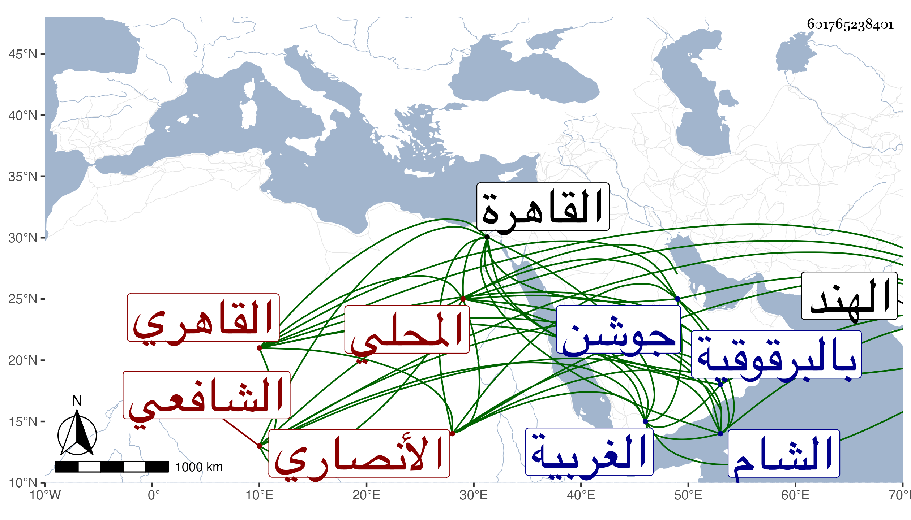

0902Sakhawi.DawLamic.ITO20230111-ara1.EIS1600.601765238401
Biography ID: 601765238401
82
محمد بن أحمد بن محمد بن إبراهيم بن أحمد بن هاشم الجلال أبو عبد الله بن الشهاب العباسي بن السكمال الأنصاري المحلي الأصل نسبة للمحلة الكبرى من الغربية القاهري الشافعي الماضي أبوه وجده ويعرف بالجلال المحلى . ولد كما رأيته بخطه في مستهل شوال سنة إحدى وتسعين وسبعمائة بالقاهرة ونشأ بها فقرأ القرآن وكتبا واشتغل في فنون فأخذ الفقه وأصوله والعربية عن الشمس البرماوي وكان مقيما معه بالبيرسية فكثر انتفاعه به لذلك ، والفقه أيضا عن البيجوري والجلال البلقيني والولي العراقي والأصول أيضا عن العز بن جماعة والنحو أيضا عن الشهاب العجيمي سبط ابن هشام والشمس الشطنوفي والفرائض والحساب عن ناصر الدين بن أنس المصري الحنفي والمنطق والجدل والمعاني والبيان والعروض وكذا أصول الفقه عن البدر الأقصرائي ولازم البساطي في التفسير وأصول الدين وغيرهما وانتفع به كثيرا والعلاء البخاري فيما كان يقرأ عليه وكان العلاء يزيد في تعظيمه لكونه مع علمه يتسبب بحيث يجلسه فوق الكمال ابن البارزي سيما وقد بلغه أنه فرق ما أرسل به إليه وهو ثلاثون شاشا مما أرسل به صاحب الهند إلى الشيخ ، وحضر دروس النظام الصيرامي والشمس بن الديري وغيرهما من الحنفية والمجد البرماوي والشمس الغراقي وغيرهما من الشافعية والشهاب أحمد المغراوي المالكي بل بلغني أنه حضر مجالس الكمال الدميري والشهاب ابن العماد والبدر الطنبدي وغيرهم وأخذ علوم الحديث عن الولي العراقي وشيخنا وبه انتفع فأنه قرأ عليه جميع شرح ألفية العراقي بعد أن كتبه بخطه في سنة تسع عشرة وأذن له في إقرائه وكان أحد طلبة المؤيدية عنده بل كان كل ما يشكل عليه في الحديث وغيره يراجعه فيه مما أثبت ما اجتمع لي منه في موضع آخر ، وسمع عليه وعلى الجمال عبد الله بن فضل الله والشرف بن الكويك والفوي وابن الجزري في آخرين ولكنه لم يكثر وقيل أنه روى عن البلقينى وابن الملقن والأبناسي والعراقي فالله أعلم ، ومهر وتقدم على غالب أقرانه وتفنن في العلوم العقلية والنقلية وكان أولا يتولى بيع البزفى بعض الحوانيت ثم أقام شخصا عوضه فيه مع مشارفته وله أحيانا وتصدى هو للتصنيف والتدريس والإقراء فشرح كلا من جمع الجوامع والورقات والمنهاج الفرعي والبردة وأتقنها ما شاء مع الاختصار والاعتناء بالذب عنها وكذا عمل منسكا وتفسيرا لم يكمل وغيرهما ممالم ينتشر والمتداول بالأيدي مما أنتفع به ما أثبته ، ورغب الأئمة في تحصيل تصانيفه وقراءتها واقرائها حتى أن الشمس البامي كان يقرأ على الونائي في أولها بل حمله معه إلى الشام فكان أول من أدخله إليها ونوه به وأمر الطلبة بكتابته فكتبوه وقرءوه ، وكذا بلغني عن القاياتي أنه أقرأ فيه وأما أنا فحضرت دروسا منه عند شيخنا ابن خضر بقراءة غيري وكان يكثر وصفه بالمتانة والتحقيق وقرأ عليه من لا يحصى كثرة وارتحل الفضلاء للأخذ عنه وتخرج به جماعة درسوا في حياته ولكنه صار بأخرة يستروح في إقرائه لغلبة الملل والسآمة عليه وكثرة المخبطين ولا يصغى إلا لمن علم تحريره وتحرزه خصوصا وهو حاد المزاج لاسيما في الحر وإذا ظهر له الصواب على لسان من كان رجع إليه مع شدة التحرز ، وحدث باليسير سمع منه الفضلاء وأخذت عنه وقرض لي غير تصنيف وبالغ في التنويه بي حسبما أثبته في موضع آخر ، وقد ولي تدريس الفقه بالبرقوقية عوض الشهاب الكوراني حين لقيه في سنة أربع وأربعين حتى كان ذلك سببا لتعقبه عليه في شرحه جمع الجوامع بما ينازع في أكثره وبما تعرض بعض الآخذين عن الشيخ لانتقاده وإظهار فساده ، وبالمؤيدية بعد موت شيخنا بل عرض عليه القضاء فأبى وشافه الظاهر بالعجز عنه بل كان يقول لأصحابه إنه لا طاقة لي على النار ، وكان إماما علامة محققا نظارا مفرط الذكاء صحيح الذهن بحيث كان يقول بعض المعتبرين إن ذهنه يثقب الماس وكان هو يقول عن نفسه إن فهمي لا يقبل الخطأ حاد القريحة قوي المباحثة حتى حكى لي إمام الكاملية أنه رأى الونائي معه في البحث كالطفل مع المعلم معظما بين الخاصة والعامة مهابا وقورا عليه سيما الخير اشتهر ذكره وبعد وصيته وقصد بالفتاوى من الأماكن النائية وهرع إليه غير واحد من الأعيان بقصد الزيارة والتبرك بل رغب الجمالي ناظر الخاص في معاونته له على بر الفقراء والمستحقين فما خالف مع مخالفته بعد لغيره فيه وأسندت إليه عدة وصايا فحمد فيها وعمر من ثلث بعضها مضأة بجوار جامع الفكاهين انتفع الناس بها دهرا ، والأمر وراء هذا ولم أكن أقصر به عن درجة الولاية وترجمته تحتمل كراريس مع أني قد أطلتها في معجمي ، وقد حج مرارا ومات بعد أن تعلل بالإسهال من نصف رمضان في صبيحة يوم السبت مستهل سنة أربع وستين وصلى عليه بمصلى باب النصر في مشهد حافل جدا ثم دفن عن آبائه بتربته التي أنشأها تجاه جوشن وتأسف الناس عليه كثيرا وأثنو عليه جميلا ولم يخلف بعده في مجموعه مثله ، ورثاه بعض الطلبة بل مدحه في حياته جماعة من الأعيان ، ومما كتبه هو على شرحه لجمع الجوامع مضمنا لشعر لشيخنا :
| يا سيدا طالعه إن فاق بحسنه فعد |
| ثم اتئد في فهمه وخذ جواهرا وجد |
وقد نال منه ومن العلاء القلقشندي وغيرهما من الأئمة المتفق على جلالتهم البقاعي مع هتلمذه لكثير منهم بما لا يقبل من مثله تسأل الله السلامة وكلمة الحق في السخط والرضا .
